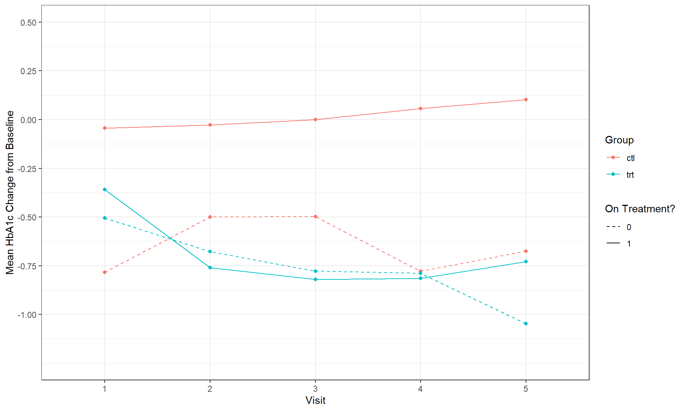
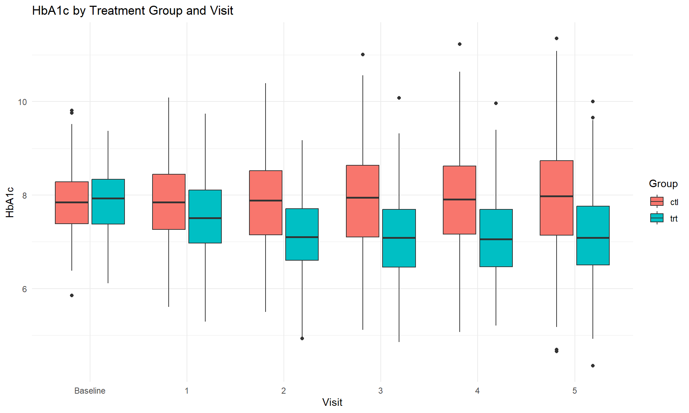

Estimands and Sensitivity Analyses
Zehui Bai
2024-11-30 20:35:41
1 Introduction
1.1 Estimands and Missing Data
Missing data in clinical studies is a major concern because it can compromise the validity, reliability, and generalizability of the study’s findings. In clinical trials, data is collected at various points to monitor the effects of interventions, track patient progress, and assess outcomes. However, missing data can occur due to various reasons, and if not handled properly, it can lead to biased results and flawed conclusions.
Missing data may result from an intercurrent event (ICE) or simply due to a missed assessment. An intercurrent event refers to an event that happens after the treatment has started and affects either the collection of data or the interpretation of the treatment’s effect. For example, a patient might stop participating in the study due to adverse effects or an unrelated medical condition that prevents further follow-up. These events can complicate the interpretation of the data because they reflect disruptions that were not anticipated at the start of the trial. In contrast, a missed assessment refers to situations where data collection fails at a particular visit or time point. This could be due to logistical issues, scheduling conflicts, or patient non-compliance, and while it may not directly affect how the treatment’s effect is interpreted, it still results in incomplete data.
Baseline data in clinical trials is usually complete. This is the data collected at the start of the study before any intervention begins. Baseline measurements are critical because they provide the reference point for understanding how patients change over time. Since baseline data is essential for trial validity, efforts are made to ensure that this data is thoroughly collected from all participants. However, as the study progresses, subsequent visits may have various missed assessments. These missing data points are more likely to occur during follow-up visits or data collection stages later in the study, particularly in long-term trials or studies involving frequent visits or tests.
The potential impact of missing data on the interpretation of study findings is significant and needs to be carefully considered when designing the study protocol. If not managed properly, missing data can introduce bias into the study. This occurs when the missing data is not random but instead is related to specific factors that could affect the outcome. For example, if participants who drop out of the study tend to have worse health outcomes, then the study results may overestimate the treatment’s effectiveness. Another issue caused by missing data is the loss of statistical power, which happens when fewer data points are available for analysis. This makes it more difficult to detect real differences between treatment groups, increasing the likelihood of false conclusions.
At the time of protocol development, researchers need to plan how to handle missing data and potential missing outcomes. Several strategies can be applied, including efforts to prevent missing data by ensuring robust follow-up processes or implementing strategies like reminder systems for patients. Additionally, statistical techniques such as imputation can be used to estimate missing values, or more advanced models that account for missing data can be employed. Sensitivity analysis, which tests how different assumptions about the missing data might affect the study’s results, is another important consideration. This ensures that the final conclusions are robust to various scenarios of missing data.
One of the first steps in managing missing data is to identify the cause of the missing data. This can involve understanding whether the missing data is Missing Completely at Random (MCAR), Missing at Random (MAR), or Missing Not at Random (MNAR). If data is MCAR, it means that the missing data is unrelated to any of the variables in the study, making the issue less concerning because it doesn’t introduce bias. MAR means that the missing data is related to observed variables, such as younger patients being more likely to miss follow-up visits. MNAR means that the missing data is related to unobserved data, such as patients with worse outcomes dropping out of the trial.
When designing a study, it is important to clearly define the research questions of interest and how missing data may affect these questions. In clinical studies, estimands are used to define the quantity being estimated and answer the research questions. Estimands provide a framework that helps define the effect of the treatment or intervention under study. Handling missing data will depend on how the estimands are defined. For example, if the goal is to estimate the effect of the treatment assuming full adherence, missing data from participants who discontinue treatment could pose a problem and would need to be appropriately accounted for. Alternatively, if the estimand reflects real-world use of the treatment, data from participants who drop out might be considered part of the natural course of the study and handled differently.
In conclusion, missing data is a complex issue that requires careful planning and consideration in clinical studies. The source of missing data, whether due to intercurrent events or missed assessments, needs to be clearly understood, and strategies for handling missing data should be built into the study design from the beginning. Identifying the causes of missing data, understanding the impact on study results, and aligning with the research objectives and estimands are essential for ensuring valid and interpretable findings in clinical research.
1.2 Estimand, Estimators and Estimation
1. Trial Objective to Estimand Flow - Trial Objective: This is the primary goal or question that the trial seeks to answer. It’s the starting point for defining what the trial will focus on. - Estimand: A precise definition of what is to be estimated in the trial. It translates the trial objective into a statistically quantifiable entity. It is essentially what the trial aims to measure or the specific effect that the trial intends to estimate. - Main Estimator: The statistical methodology or approach used to estimate the estimand. This could be a specific statistical model or analysis technique. - Main Estimate: The actual numerical estimate obtained from applying the main estimator to the trial data. This is the result that addresses the trial objective. - Sensitivity Estimators and Estimates: Additional analyses conducted to assess the robustness of the main estimate against different assumptions or conditions. These help validate the reliability of the findings under various scenarios.

2. Description of an Estimand: Attributes - Treatment: Identification of both the treatment of interest and the comparator (control treatment). It specifies what is being tested and against what it is being compared. - Variable: The primary measure or outcome variable that the study aims to evaluate. This could be a clinical metric, patient-reported outcome, or a biomarker. - Population: The specific group of patients targeted by the scientific question. This defines who the trial results will apply to. - Population-Level Summary: How the results are summarized across the entire study population, such as differences between means, ratios of proportions, or hazard ratios. This summarizes the treatment effect at the group level.

3. Intercurrent Events and Strategies to Address Them - Intercurrent events are occurrences during the trial that could affect the interpretation of the treatment effect, such as participants taking additional medication. - Treatment Policy: Considers the effect of the treatment as it is used in practice, including any additional medications taken. - Composite: Defines the endpoint to include whether or not intercurrent events occur, considering events like additional medication intake as part of the treatment assessment. - Hypothetical: Estimates what the treatment effect would have been if the intercurrent event had not occurred. - Principal Stratum: Focuses on a subset of participants who would not experience the intercurrent event, assessing the effect in this more controlled scenario. - While on Treatment: Looks at the treatment effect only before any intercurrent event occurs, isolating the effect of the treatment itself.
1.3 Causal
Causal estimands are a critical concept in the field of statistics, particularly when it comes to understanding the effect of interventions in clinical trials and observational studies. They are designed to estimate the impact of a treatment by considering what the outcome would have been under different treatment conditions.
- Concept of Causal Estimands
Causal estimands are aimed at answering “what if” questions in a formal, quantitative way. They focus on understanding the effect of a specific treatment by asking how the outcomes would differ if the treatment were applied versus not applied, or if an alternative treatment were used. This approach aligns with causal inference, which seeks to infer the cause-and-effect relationship from data.
- Framework of Potential Outcomes
The potential outcomes framework is fundamental to causal inference and was originally formalized by Donald Rubin. It considers every subject in a study to have potential outcomes under each treatment condition. For example: - \(Y(1)\): Outcome if the subject receives the treatment. - \(Y(0)\): Outcome if the subject does not receive the treatment.
These potential outcomes help to define the causal effect of the treatment, which cannot be observed directly since we can only observe one of these outcomes for each individual — the one corresponding to the treatment they actually received.
- Causal Estimand Formula
The basic causal estimand in a randomized controlled trial (RCT) can be expressed as: - \(E(Y(1)) - E(Y(0))\) This represents the expected difference in outcomes between subjects assigned to the treatment versus those assigned to the control. This difference is what statisticians aim to estimate through the trial.
- Challenges in Observational Studies
In observational studies, where treatments are not randomly assigned, estimating causal effects becomes more complex due to potential confounding factors. Here, additional models and assumptions about how treatments are assigned to patients (assignment models) and how outcomes are generated (outcome models) are necessary. These models help to adjust for factors that may influence both the treatment assignment and the outcomes.
- International Council for Harmonization (ICH) and Causal Estimands
The ICH guidelines emphasize the importance of causal estimands in clinical trials, suggesting that the trials should be designed to answer specific causal questions. Even though the term “causal” is not explicitly used, the guidelines align with causal reasoning principles to ensure that the results of clinical trials are robust and interpretable in terms of causal effects.
- Statistical Inference for Causal Estimands
Statistical methods are employed to estimate causal estimands from the observed data. In RCTs, this often involves comparing the observed outcomes between the treatment and control groups, leveraging the randomization to argue that these groups are comparable. In non-randomized studies, more sophisticated statistical techniques, such as instrumental variable analysis, propensity score matching, or structural models, are required.
- Importance for Regulatory Authorities
Regulatory authorities, such as the FDA or EMA, are particularly interested in causal estimands because they provide a clear basis for regulatory decisions regarding drug approvals. By focusing on causal estimands, regulators can better understand the true effect of a drug, independent of other confounding treatment or patient characteristics
1.4 Missing data vs intercurrent event
Intercurrent events are incidents that occur after the initiation of treatment and may impact the interpretation of the trial outcomes or affect the continuity of the measurements related to the clinical question of interest. These can include events such as patients starting additional therapies, experiencing side effects leading to treatment discontinuation, or any other circumstances that alter the course of standard treatment administration.
Missing data refers to information that was intended to be collected but was not, due to various reasons such as patients dropping out of the study, missing visits, or failure to record certain outcomes. It’s important to distinguish between data that is missing because it was not collected (but could have been under different circumstances) and data that is considered not meaningful due to an intercurrent event.

Handling Strategies for Intercurrent Events and Missing Data
1. Treatment Policy Strategy: - Approach: Includes all data up to and possibly including the intercurrent event, considering the measurements of interest regardless of subsequent therapies or changes. - Missing Data Issue: Here, the missing data problem may arise when assuming values for unobserved outcomes based on the observed data. For example, if patients are lost to follow-up but are assumed to continue on their projected path without treatment changes.
2. Hypothetical Strategy: - Approach: Assumes a scenario where the intercurrent event, such as treatment discontinuation, does not occur. - Missing Data Issue: Focuses on hypothetical data. For instance, it would not consider data from follow-up visits if a patient had not been lost to follow-up, imagining the patient remained in the trial under the initial treatment conditions.
3. Composite Strategy: - Approach: Combines multiple elements or outcomes into a single variable that incorporates the intercurrent event as part of the variable of interest. - Missing Data Issue: Typically, there is no missing data concern under this strategy as the intercurrent events are accounted for within the composite outcome measure.
4. While-on-Treatment Strategy: - Approach: Analyzes the response to treatment only up to the point of an intercurrent event. - Missing Data Issue: There is generally no missing data because the analysis only includes data collected while the patients were on treatment and before any intercurrent event.
5. Principal Stratum Strategy: - Approach: Focuses on specific subgroups (strata) that are not affected by the intercurrent events, based on their potential outcomes under different treatment scenarios. - Missing Data Issue: This strategy avoids missing data issues by defining the population such that the intercurrent event is not considered relevant for the stratum of interest. It inherently excludes patients from the analysis if they are outside the target strata.
1.5 Sensitivity versus Supplementary Analysis
Sensitivity Analysis
- Purpose: Sensitivity analysis is performed to assess the robustness of the conclusions derived from the main analysis of a clinical trial. It involves testing how the main findings hold up under various assumptions or variations in the analysis model.
- Process: This type of analysis typically involves using multiple sensitivity estimators that deviate in specific ways from the main estimator’s assumptions. For instance, sensitivity analyses may involve changing assumptions about the distribution of the data, the model used, or handling of missing data.
- Objective: The goal is to explore the extent to which the main findings are dependent on the assumptions made in the statistical modeling. This is crucial for verifying that the conclusions are not unduly influenced by these assumptions and therefore can be considered reliable under a variety of scenarios.
Supplementary Analysis
- Purpose: Supplementary analysis goes beyond sensitivity analysis to further explore and understand the treatment effects. These analyses are usually more exploratory in nature and are often conducted to address additional research questions or hypotheses that were not the primary focus of the main analysis.
- Process: This could include additional analyses as requested by regulatory authorities, or analyses planned after reviewing initial findings to probe deeper into specific areas of interest. Supplementary analyses may investigate different subgroups of patients, additional endpoints, or longer-term outcomes that were not part of the original estimand.
- Objective: The main aim is to provide a broader understanding of the data and treatment effects. This might involve confirming the findings from the main analysis, exploring areas where the main analysis was inconclusive, or generating new insights that could lead to further research questions.

Key Differences and Interplay
- Scope: Sensitivity analysis is more focused on testing the stability and reliability of the results under different assumptions directly linked to the main outcome of interest defined by the estimand. In contrast, supplementary analysis often has a broader scope, potentially addressing new or secondary questions that extend beyond the original estimand.
- Outcome Dependency: Sensitivity analyses are inherently tied to the outcomes of the main estimator and focus on the dependencies and variabilities around these outcomes. Supplementary analyses, however, might explore entirely new outcomes or expand on the findings of the main analysis in ways that provide additional context or insights.
- Regulatory Impact: Sensitivity analyses are critical for regulatory review, providing evidence that the study findings are robust and not unduly influenced by specific assumptions. Supplementary analyses, while informative, may not always be crucial for regulatory approval but can be important for labeling, post-marketing commitments, or future clinical development strategies.
1.6 Disease Specific Guideline
European Medicines Agency (EMA) and the U.S. Food and Drug Administration (FDA) include estimands in their specific disease guidance documents
- EMA Guidance:
- Diseases Covered: The EMA has incorporated the use
of estimands in the guidelines for several conditions and areas,
including:
- Diabetes
- Alzheimer’s disease
- Acute kidney injury
- Chronic non-infectious liver diseases
- Epileptic disorders
- Medicinal products with genetically modified cells
- Registry-based studies
- Diseases Covered: The EMA has incorporated the use
of estimands in the guidelines for several conditions and areas,
including:
- FDA Guidance:
- Diseases Covered: The FDA also specifies the use of
estimands in their guidance for diseases such as:
- Eosinophilic esophagitis
- Acute myeloid leukemia
- Chronic rhinosinusitis with nasal polyps
- Diseases Covered: The FDA also specifies the use of
estimands in their guidance for diseases such as:
2 Analysis of Treatment Policy Estimands
2.1 Case Study: type 2 diabetes

Study Design
- Type: Parallel, randomized, placebo-controlled, blinded trial
- Size: 400 patients, randomized in a 1:1 ratio between the test treatment and placebo
Population
- Participants: Patients with type 2 diabetes managed solely by diet and exercise
Treatments
- Comparison: Test treatment versus placebo
Key Variable
- Primary Endpoint: Change in Hemoglobin A1c (HbA1c) levels from baseline to week 26. HbA1c is a marker of average blood glucose levels over the previous two to three months, with a decrease indicating improvement in diabetes management.
Summary Measure
- Assessment: Expected change from baseline to week 26 in HbA1c, with a between-group comparison focusing on the difference in changes between the test treatment and placebo groups.
Intercurrent Event
- Event Description: Discontinuation of the randomized treatment and
switch to unblinded use of the test treatment. This event is considered
under a single category termed ‘treatment non-adherence,’ which
includes:
- For patients initially receiving the test treatment, this would involve continuing the test treatment but in an unblinded manner.
- For patients initially receiving placebo, this would involve switching to the test treatment, also unblinded.
Visit Schedule
- Visits: One baseline visit (V0) and five post-baseline visits (V1-V5), with V5 at week 26 marking the end of the study period.
Implications of the Design and Intercurrent Event
Unblinding Risks: The possibility of patients switching from placebo to the test treatment and from blinded to unblinded test treatment use could potentially introduce biases or affect the trial’s integrity by revealing treatment assignments. This needs careful handling to maintain the validity of the study outcomes.
Handling of Non-adherence: The study’s approach to treatment discontinuation (categorized as non-adherence) could impact the interpretation of the efficacy data. It’s crucial how this data will be analyzed, as non-adherence might affect the comparability between groups if not properly accounted for in the analysis.
Efficacy Measurement: The primary focus on the change in HbA1c allows for a direct assessment of the treatment’s impact on glucose regulation over a substantial period, aligning well with clinical objectives in diabetes care. The measure is objective and quantifiable, providing a clear metric for evaluating the effectiveness of the treatment.
Ethical Considerations: Allowing patients on placebo to switch to the test treatment (unblinded) after discontinuation could be seen as enhancing the ethical conduct of the trial by potentially providing a beneficial treatment to those not initially receiving it. However, this must be balanced against the risk of bias introduced by such switches.
2.2 Treatment Policy Estimand of Interest
Here’s a breakdown of the key components:
Population:
- Patients with type 2 diabetes who are managing their condition solely through diet and exercise.
Treatments:
- The trial compares a test treatment with a placebo. The crucial aspect of this estimand is that it considers the effect of the treatments regardless of the patients’ adherence to the assigned treatment regimen.
Variable:
- The primary endpoint is the change in Hemoglobin A1c (HbA1c) from baseline to week 26. HbA1c is a key indicator that reflects the average blood glucose concentration over the previous three months.
Summary Measure:
- The expected change from baseline in HbA1c at week 26, with the analysis focusing on the difference between the two groups. This measure will help determine if the test treatment is more effective than the placebo in lowering blood glucose levels over the trial period.

Data Collection Approach:
- Data will continue to be collected until the primary endpoint for all patients, including those who do not adhere to the treatment to which they were initially randomized. This approach supports the treatment policy estimand by capturing the full scope of treatment effects, inclusive of all deviations from the protocol that might occur during the trial.
Significance of This Estimand:
- This estimand is significant because it aims to capture the ‘real-world’ effectiveness of the test treatment. By evaluating the impact of the treatment irrespective of adherence, the estimand provides a more comprehensive understanding of how effective the treatment could be in typical clinical practice, where patients may not always follow prescribed treatments strictly.
The treatment policy estimand approach allows the study results to be more generalizable and reflective of practical clinical outcomes, acknowledging that non-adherence is a common occurrence in real-world settings. This makes the findings relevant for healthcare providers and policymakers when considering the potential benefits and limitations of new treatments for type 2 diabetes.
2.3 Missing data under treatment policy strategy
Missing data imputation is a critical process in clinical trials, particularly when ensuring the integrity and robustness of the study’s results in the face of missing data due to non-adherence, dropouts, or other reasons. Aligning missing data imputation strategies with the targeted estimand and considering clinically and statistically sound assumptions are essential for maintaining the validity of the trial’s conclusions.

Principles for Missing Data Imputation:
- Alignment with Estimand: The method of imputation should reflect the nature of the estimand. For a treatment policy estimand, the imputation method should accommodate data in a way that reflects the intention-to-treat principle, considering all assigned treatments as if they were followed as per protocol.
- Clinically Plausible Assumptions: These depend on the therapeutic context, disease characteristics, and the treatment mechanism. Assumptions must consider factors like whether the drug is disease-modifying or merely symptomatic and its pharmacokinetics such as half-life.
- Adequate Modelling Assumptions: The statistical model used for imputation should be robust, minimizing bias and providing a reliable approximation of missing values based on available data.
Common Imputation Methods:
These methods are often used in scenarios where treatment discontinuation leads to missing data, and the aim is to estimate the trajectory of patients’ outcomes as if they had continued on the assigned treatment or shifted to a control or placebo condition.
When choosing an imputation method, it is critical to consider the nature of the disease and treatment. For instance, in chronic conditions where effects are prolonged and discontinuations common, more nuanced approaches like CIR might be more appropriate than J2R, which could be more suitable for acute settings or where the drug effect is expected to cease immediately upon discontinuation.
Comparison of Methods
- Reference-Based Methods (J2R, CIR, CR):
- Jump to Reference (J2R / JR): Assumes all drug effects cease immediately upon discontinuation, with future outcomes following the placebo trajectory.
- Copy Increment in Reference (CIR): Assumes the rate of change (increment) in the patient’s outcomes will start to mimic those observed in the placebo group post-discontinuation.
- Copy Reference (CR): Patients are assumed to follow the entire trajectory of the placebo group from the point of their discontinuation.
- Missing at Random (MAR):
- Suitable when the reasons for missing data are related to observed factors rather than the missing data itself, assuming a similarity in behavior between those with complete and incomplete data.
- Retrieved Dropout (RDO) Imputation:
- Useful in scenarios where it’s possible to track outcomes of patients post-discontinuation, providing a more direct observation of potential outcomes for dropouts. This method is particularly valuable when analyzing long-term effects and adherence issues in clinical trials.
1. Jump to Reference (J2R / JR) Imputation
- Overview: This method assumes that any drug effect
disappears immediately upon discontinuation, and the patient’s condition
reverts to what it would have been under the placebo.
- Description: This method assumes that any effect from the active drug ceases immediately upon discontinuation. Patients are then assumed to “jump” to the trajectory typical of the reference group, usually the placebo arm.
- Use Case: Appropriate when the drug effect dissipates quickly after discontinuation.
- Visualization Details:
- Similar to CR, the blue line represents the drug arm and the black line represents the control (placebo) arm.
- Patients who discontinue the drug are assumed to revert to a condition similar to the placebo group immediately.
- Future values are worse than if they had continued on the drug but are aligned with the mean of the placebo group for simplicity in analysis.

2. Copy Reference (CR) Imputation
- Overview: In the CR method, it is assumed that once
a patient discontinues the drug, their future values will mimic the
trajectory of the placebo arm, regardless of any benefit they might have
initially experienced from the drug.
- Description: Here, the assumption is that after discontinuation, the changes (increments) in the patient’s measurements mimic those observed in the reference group from that point forward.
- Use Case: Useful when the drug’s effect diminishes gradually rather than instantly, allowing for a more gradual transition in the effect observed in patients.
- Visualization Details:
- The blue line represents the drug arm, and the black line represents the placebo arm.
- Patients who drop out are assumed to follow the trajectory of the placebo arm exactly from the point of dropout.
- The imputed values for future observations are aligned with the mean trajectory of the placebo group.

3. Copy Increments in Reference (CIR) Imputation
- Overview: This method assumes that patients who
drop out from the drug arm do not revert entirely to the placebo
condition but instead begin to follow the incremental changes observed
in the placebo arm. This acknowledges some residual effect of the drug
that was taken before dropout.
- Description: Patients are assumed to follow the distribution pattern of the reference group from the point of randomization. This method effectively resets the patient’s expected outcome to mirror the reference group entirely from the start of the study.
- Use Case: Best suited for scenarios where treatment effects are unclear or highly variable, or when the treatment is suspected to have no lasting independent effects beyond discontinuation.
- Visualization Details:
- The drug’s impact is considered to taper off, not abruptly stop, as patients begin to mimic the incremental progress (or lack thereof) of the placebo arm from their last observed value.
- This creates a more gradual transition in the dataset, potentially reflecting a more realistic scenario of drug discontinuation effects.

4. Missing at Random (MAR)
- Implementation: This approach assumes that missing data can be modeled based on similar subjects within the same treatment arm, considering that missingness is not related to unobserved variables.
- Visualization and Usage: The graph illustrates how variability in outcomes increases over time, which is a typical scenario in long-term studies. The imputed values (squares) are based on the conditional mean given the observed values, which helps maintain the internal consistency of the dataset.

5. Retrieved Dropout (RDO)
- Concept: The RDO method focuses on utilizing data from patients who discontinued treatment but whose outcomes continue to be tracked. This approach helps model what could happen to patients who drop out, by using data from those who have similar profiles but remain under observation.
- Implementation and Challenges: For patients with missing data at a specific visit, information is borrowed from similar patients in the same treatment arm who have available dropout data. This method requires a sufficient amount of RDO data for reliable imputation and can lead to variance inflation if the data is not sufficient, impacting the bias-variance trade-off.
- Visualization: The diagram shows various points where patients either continue, drop out, or are followed after discontinuation, with imputed values being informed by the retrieved dropout data.

2.4 Multiple Imputation

Step 1: Parameter Estimation (Imputation Model)
- Objective: Fit a multivariate normal distribution for each treatment arm using data observed prior to any intercurrent event (ICE), such as dropout or switching treatments.
- Components:
- \(\mu_a, \Sigma_a\): Mean and covariance matrix for the active treatment arm.
- \(\mu_r, \Sigma_r\): Mean and covariance matrix for the reference (placebo) arm.
- Uninformative priors are used for both the mean and the covariance matrices, with the covariance matrix typically employing an Inverse Wishart distribution. This choice helps in avoiding bias from overly prescriptive assumptions about the data structure.
Step 2: Imputation
- Objective: Generate multiple complete datasets by imputing missing values based on the distributions estimated in Step 1.
- Process:
Draw from the posterior distribution of parameters \(\mu_r, \Sigma_r, \mu_a, \Sigma_a\) established in Step 1.
Construct a joint distribution of observed and missing data to facilitate imputation.
Impute missing data from the conditional distribution of \(Y_{miss} | Y_{obs}\), where \(Y_{miss}\) is the missing data and \(Y_{obs}\) is the observed data, based on the relationships established in the model.
The imputation is repeated multiple times (commonly denoted as \(M\) times), creating multiple complete datasets.
Different imputation means are calculated depending on the method: J2R, CIR, CR. Each method adjusts the imputation based on the reference trajectory, whether it’s a direct copy, an increment adjustment, or a complete jump to the reference values at the time of dropout.
- J2R Mean (\(\tilde{\mu}\)):
- For Jump to Reference, the imputed values for post-ICE data are a direct continuation of the reference group mean from the latest observed time point (\(t_i\)), effectively assuming that the treatment effect disappears and the patient follows the placebo trajectory.
- CIR Mean (\(\tilde{\mu}\)):
- For Copy Increment in Reference, the imputed values are calculated as a blend of the active arm’s trajectory up to the last observed time point and then shifting towards the change observed in the reference group. This reflects a gradual decline or alteration in the treatment effect rather than an abrupt stop.
- CR Mean (\(\tilde{\mu}\)):
- For Copy Reference, the imputed values are straightforwardly set to follow the reference arm’s mean (\(\mu_r\)), assuming that post-dropout, the patient’s outcomes align exactly with those typically seen in the placebo group.
- J2R Mean (\(\tilde{\mu}\)):
Step 3: Analysis
- Objective: Analyze each dataset independently to compute the summary measures of interest, which might include means, variances, or other statistical tests.
- Importance: This step allows for the assessment of variability and the robustness of the study results across different imputed datasets.
Step 4: Pooling
- Objective: Combine results from multiple imputed datasets.
- Methodology: Use Rubin’s rules to pool the results. Rubin’s rules provide a way to combine estimates from multiple imputed datasets to obtain overall estimates and their variances, accounting for both within-imputation and between-imputation variability. This approach helps in deriving more accurate confidence intervals and p-values.
2.5 Analysis of Treatment Policy Estimands
An analysis of the example randomized controlled trial in patients with type 2 diabetes. The analyses in this worksheet target a treatment policy estimand, i.e., we are interested in the comparison between treatment versus placebo group irrespective of whether or not patients experienced the intercurrent event of treatment discontinuation.

2.5.1 Review Data
Although we are interested in the treatment effect irrespective of whether or not a patient discontinued randomized treatment, it is still generally of interest to understand the proportion of patients who adhered or discontinued treatment.
Let us create a table to summarize the number and proportion of patients who discontinued treatment by group and visit.
## $ctl
## ontrt 1 2 3 4 5
## 0 8 (4.0%) 18 (9.0%) 31 (15.5%) 43 (21.5%) 50 (25.0%)
## 1 192 (96.0%) 182 (91.0%) 169 (84.5%) 157 (78.5%) 150 (75.0%)
## Total 200 (100.0%) 200 (100.0%) 200 (100.0%) 200 (100.0%) 200 (100.0%)
##
## $trt
## ontrt 1 2 3 4 5
## 0 5 (2.5%) 12 (6.0%) 20 (10.0%) 27 (13.5%) 29 (14.5%)
## 1 195 (97.5%) 188 (94.0%) 180 (90.0%) 173 (86.5%) 171 (85.5%)
## Total 200 (100.0%) 200 (100.0%) 200 (100.0%) 200 (100.0%) 200 (100.0%)Now let us create a figure to show the mean change in HbA1c from baseline by visit, treatment group and whether they have experienced the intercurrent event of treatment discontinuation

2.5.2 Analysis of Data (ANCOVA)
As we have no missing data, we can perform our analysis just using ANCOVA. Our primary estimand is interested in the change in HbA1c from baseline to week 26 (visit 5), so we can restrict our analysis to visitn==5.
##
## Call:
## lm(formula = hba1cChg ~ group + hba1cBl, data = .)
##
## Residuals:
## Min 1Q Median 3Q Max
## -3.1306 -0.7002 -0.0591 0.7915 3.2440
##
## Coefficients:
## Estimate Std. Error t value Pr(>|t|)
## (Intercept) 5.94031 0.63404 9.369 < 2e-16 ***
## grouptrt -0.68208 0.10915 -6.249 1.07e-09 ***
## hba1cBl -0.76454 0.07976 -9.585 < 2e-16 ***
## ---
## Signif. codes: 0 '***' 0.001 '**' 0.01 '*' 0.05 '.' 0.1 ' ' 1
##
## Residual standard error: 1.092 on 397 degrees of freedom
## Multiple R-squared: 0.2482, Adjusted R-squared: 0.2444
## F-statistic: 65.52 on 2 and 397 DF, p-value: < 2.2e-162.5.3 Trial with Missing Data
## $ctl
## dispo 1 2 3 4
## Off-study 2 (1.0%) 7 (3.5%) 14 (7.0%) 24 (12.0%)
## Off-treatment, on-study 6 (3.0%) 11 (5.5%) 17 (8.5%) 19 (9.5%)
## On-treatment 192 (96.0%) 182 (91.0%) 169 (84.5%) 157 (78.5%)
## Total 200 (100.0%) 200 (100.0%) 200 (100.0%) 200 (100.0%)
## 5
## 32 (16.0%)
## 18 (9.0%)
## 150 (75.0%)
## 200 (100.0%)
##
## $trt
## dispo 1 2 3 4
## Off-study 1 (0.5%) 4 (2.0%) 9 (4.5%) 14 (7.0%)
## Off-treatment, on-study 4 (2.0%) 8 (4.0%) 11 (5.5%) 13 (6.5%)
## On-treatment 195 (97.5%) 188 (94.0%) 180 (90.0%) 173 (86.5%)
## Total 200 (100.0%) 200 (100.0%) 200 (100.0%) 200 (100.0%)
## 5
## 16 (8.0%)
## 13 (6.5%)
## 171 (85.5%)
## 200 (100.0%)2.5.4 Complete-Case Analysis
##
## Call:
## lm(formula = hba1cChg ~ group + hba1cBl, data = .)
##
## Residuals:
## Min 1Q Median 3Q Max
## -3.1634 -0.6974 -0.0336 0.7934 3.1896
##
## Coefficients:
## Estimate Std. Error t value Pr(>|t|)
## (Intercept) 5.86939 0.67544 8.690 < 2e-16 ***
## grouptrt -0.74453 0.11422 -6.518 2.49e-10 ***
## hba1cBl -0.74898 0.08605 -8.704 < 2e-16 ***
## ---
## Signif. codes: 0 '***' 0.001 '**' 0.01 '*' 0.05 '.' 0.1 ' ' 1
##
## Residual standard error: 1.07 on 349 degrees of freedom
## (48 observations deleted due to missingness)
## Multiple R-squared: 0.2602, Adjusted R-squared: 0.256
## F-statistic: 61.38 on 2 and 349 DF, p-value: < 2.2e-162.5.5 Multiple imputation analysis (JR - Jump to Reference)
However, first we need to create:
- A dataset showing the visit when the intercurrent event occurred for each patient.
- A list of the key variables to be used in the imputation step.
Note that in reality we never observe the missing data. Therefore, we would not be able to decide on the imputation strategy based on the data. Instead this should be based on clinically plausible assumptions depending on the therapeutic setting, disease characteristics and treatment mechanism.
ry running some different analyses on data_missing using different assumptions for the missing data. Strategies available in rbmi are:
- MAR - Missing At Random
- JR - Jump to Reference
- CR - Copy Reference
- CIR - Copy Increments in Reference
- LMCF - Last Mean Carried Forward
Step 1: Fit the imputation model to the observed data
{r,echo = F,message = FALSE, error = FALSE, warning = FALSE}
# Define which imputation method
# Here we use Bayesian multiple imputation with 250 imputed datasets
set.seed(123456)
method <- rbmi::method_bayes(burn_in = 200,
burn_between = 6,
n_samples = 250)
# Create samples for the imputation parameters by running the draws() function
drawObj <- draws(data = data_missing,
data_ice = dat_ice,
vars = vars,
method = method)Step 2: Impute the missing data using the imputation model multiple times
{r,echo = F,message = FALSE, error = FALSE, warning = FALSE}
# Impute the data using the imputation model above
# In the dataset `dat_ice` we specified a jump-to-reference strategy
# Now we need to specify for each group what this 'reference' is
# Set reference arm in control group to itself to the control group
# Set reference arm in treatment group to control group
imputeObj <- rbmi::impute(draws = drawObj,
references = c("trt"="ctl",
"ctl"="ctl"))Step 3: Analyse each complete dataset
{r,echo = F,message = FALSE, error = FALSE, warning = FALSE}
# Fit the analysis model (ANCOVA) on each imputed dataset
# Analysis model includes group and baseline HbA1c as covariates
anaObj <- analyse(imputations = imputeObj,
fun = ancova,
vars = set_vars(outcome = "hba1cChg",
visit = "visitn",
subjid = "subjid",
group = "group",
covariates = "hba1cBl"))Step 4: Combine the results to obtain point estimate and variance estimation
{r,echo = F,message = FALSE, error = FALSE, warning = FALSE}
# Pool the results to get treatment effects
# In the output:
# trt_x refers to the difference between control and treatment group at visit x
# lsm_ref_x is the change from baseline in the reference group (control) at visit x
# lsm_alt_x is the change from baseline in the alternative group (treatment) at visit x
poolObj <- pool(results = anaObj, conf.level = 0.95, alternative = "two.sided")
poolObj2.5.6 Retrieved-dropout models
This practical above has only covered reference-based imputation methods. An alternative approach is to use retrieved-dropout models. The link below contains a vignette showing how the rmbi package can also be used to implement this approach.
https://insightsengineering.github.io/rbmi/main/articles/retrieved_dropout.html
3 Analysis of Hypothetical Estimands
3.1 Estimation for hypothetical estimands

3.2 Prediction of Hypothetical Trajectories
- Explicit or implicit predictions of hypothetical trajectories: This refers to making predictions about what might happen under various hypothetical scenarios, using either explicitly stated models or assumptions.
- Assumptions for the predictions: Assumptions must align with the hypothetical scenarios, influencing the model’s design and expected outcomes.
Notation and Study Design
- Randomized Treatment (Z): Indicates whether a participant received the treatment (1) or was in the control group (0).
- Intercurrent Event Indicator (Eᵢ): Shows whether an intercurrent event (ICE) occurred at each visit (1 if occurred, 0 if not). Assumes once an intercurrent event occurs, it continues to exist.
- Outcome Variable (Y): The observed change in HbA1c from baseline at week 26.
- Potential Outcome (Yᵢ): Hypothetical outcome without any intercurrent event or under different treatment conditions.
- Estimand of interest: The difference in the outcome between treatment and control groups, assuming no intercurrent events.
- Covariates (X₀, Xᵢ): Baseline and subsequent covariates that might affect the outcome, measured throughout the study.

- Z influences E₁: Treatment can affect the likelihood of an intercurrent event.
- Eᵢ influences Eᵢ₊₁: Indicates a cascade effect where an intercurrent event at one point increases the likelihood of another in the future.
- X₀ → X₁ → X₂ → … → X₄: Represents changes or measurements of covariates (like HbA1c) over time.
- Arrows into Y: Shows that all these factors, including treatment, intercurrent events, and covariates, influence the final outcome of HbA1c levels.

Treatment Policy
- Green Pathways (Estimated Treatment Effect): These represent the direct and indirect effects of the treatment (Z) on the outcome (Y). The treatment affects each point in time where HbA1c is measured (X1 through X4) and can influence intercurrent events (E1 through E5), which in turn can affect subsequent measurements and the final outcome.
- This diagram shows all possible impacts of the treatment throughout the course of the study, including its potential to affect the occurrence of intercurrent events, which are particularly critical in clinical trials.
Hypothetical Estimand
- Green Pathways (Estimated Treatment Effect): These lines show the direct influence of treatment on the outcome (Y) and intermediate HbA1c measurements (X1 to X4), assuming no intercurrent events (E1 to E5) affected the outcomes. This hypothetical estimand aims to estimate what the treatment effect would be in an ideal scenario where no intercurrent events alter the course of treatment.
- Red Pathways (Biasing path): These paths highlight potential sources of bias if the intercurrent events were ignored in the analysis. They show how each intercurrent event (E1 to E5) could influence the HbA1c measurements (X2 to X4), potentially confounding the true treatment effect.
Key Points
- Treatment Policy Estimand: This considers all real-world effects, including intercurrent events, providing a comprehensive view of treatment effectiveness.
- Hypothetical Estimand: By ignoring intercurrent events, this focuses on the direct effect of the treatment under idealized conditions, useful for understanding the intrinsic efficacy of the treatment.
Concept of Time-dependent Confounding:
- Time-dependent Confounders (X₁-X₄): These are
variables that:
- Are affected by previous treatment.
- Influence the probability of future treatment.
- Impact the outcome of interest (Y).
In this study, the levels of HbA1c measured at different times (X₁ through X₄) are time-dependent confounders because each measurement can influence and be influenced by treatment decisions and outcomes.
The challenge lies in adjusting for these confounders without inadvertently blocking the pathway through which the treatment effect is transmitted. This is a key concern in causal inference: - Blocking the Effect Pathway: Adjusting for X₁-X₄ directly could block some of the treatment effects since these confounders are also intermediaries of treatment effects.

Directed Acyclic Graphs (DAGs) Analysis - DAG (a):
- Green Paths: Show the estimated treatment effect paths which demonstrate how treatment (Z) potentially affects the final HbA1c measurement (Y) through intermediate measurements (X₁-X₄) and intercurrent events (E₁-E₅).
- Red Paths: Illustrate the biasing paths where confounders (X₁-X₄) and intercurrent events (E₁-E₅) may misrepresent the true treatment effect if not properly accounted for.
Directed Acyclic Graphs (DAGs) Analysis - DAG (b):
- Simplified Representation: Focuses on paths that are purely related to treatment effects, ignoring paths through time-dependent confounders to avoid the bias introduced by adjusting for these confounders.
Desired Comparison:
- Y(Z = 1, E₁-₄ = 0) vs Y(Z = 0, E₁-₄ = 0): This comparison aims to measure the treatment effect assuming no intercurrent events have occurred to purely see the effect of the treatment.
3.3 Methods for Estimating Hypothetical Estimands
3.3.1 Multiple Imputation (MI)
Multiple Imputation for Hypothetical Estimands:
- Purpose: In clinical trials, especially those with longitudinal measurements, data after an ICE are often not considered relevant for the hypothetical estimand (the outcome that would have been observed had the ICE not occurred). This can be thought of as a missing data problem.
- Method: MI treats all post-ICE data as missing. For example, if an intercurrent event \(E1\) occurs, then subsequent measurements \(X1, X2, X3, X4\), and the final outcome \(Y\) are treated as missing. The imputation model is used to estimate these missing values based on other available data, under the assumption that the missingness is related to observed data but not to the missing data itself.
- Assumptions: A key assumption in this context might be Missing At Random (MAR), where the likelihood of missing data depends only on observed data.
Use of MAR in Predicting Hypothetical Trajectories:
- Definition: Under MAR, the missingness of data is related only to the observed data, not to any unobserved data.
- Application: In hypothetical estimands, assuming MAR suggests that the data missing due to ICEs can be imputed based on the observed characteristics and responses of similar patients who did not experience the ICEs.
- Feasibility: Whether MAR is a sensible assumption depends on the specific characteristics of the intercurrent event and the study design. If the ICEs are believed to be random with respect to future outcomes after controlling for observed data, MAR can be a reasonable assumption. However, if ICEs are related to unobserved future outcomes or unmeasured confounders, then MAR would not be appropriate, and a more sophisticated method like MNAR (Missing Not At Random) might be needed.
3.3.2 Inverse Probability Weighting (IPW)
Inverse Probability Weighting for Hypothetical Estimands: - Purpose: IPW is used to adjust for the non-random occurrence of intercurrent events by modeling the process leading to these events. - Method: Each participant’s data is weighted by the inverse of the probability of their observed treatment path, given their covariates and previous treatment history. This approach aims to create a pseudo-population where the occurrence of intercurrent events is independent of treatment, mimicking the condition of no ICEs.
Problem Setup:
- Confounder (\(X_i\)): This is a variable that influences both the outcome (\(Y\)) and the likelihood of an intercurrent event (\(E_{i+1}\)).
- Intercurrent Event (\(E_i\)): Events that can affect the continuation or outcome of the treatment.
IPW Idea:
- Upweighting: In the presence of intercurrent events that might skew the observed outcome, IPW adjusts the influence of each individual’s data based on their probability of not experiencing the intercurrent event, given their confounders. This adjustment helps in maintaining a balanced representation of all groups within the study.
- Creating a Pseudo-Population: IPW adjusts the dataset to create a “pseudo-population” in which the distribution of individuals who did and did not experience intercurrent events is balanced as if these events were independent of the measured confounders. This adjustment helps to mitigate the effect of confounders that are linked to the likelihood of experiencing an intercurrent event.
Imagine a study with two baseline groups differentiated by color (blue/green), which represent different levels or types of a confounder \(X\). Suppose that the probability of not having an intercurrent event \(E=0\) given the confounder blue is \(P(E=0|blue) = 0.5\) (i.e., 50%). If in the actual study, fewer blue individuals did not experience the event compared to green, then each blue individual who did not experience the event might be weighted more heavily (e.g., a weight of 2) to represent not only themselves but also those blue individuals who did have the event, thus simulating a scenario where the intercurrent event is independent of being blue or green.

- Weights (\(w_k\)): Each subject \(k\) receives a weight calculated as the inverse of the probability of being free from the intercurrent event, conditioned on their treatment status \(Z\) and confounders \(X\). Mathematically, this is expressed as: \[ w_k = \frac{1}{P(E_k = 0|Z_k, X_k)} \] This weight is used to adjust their contribution to the analysis, effectively increasing the influence of underrepresented scenarios within the observed data.
IPW for Hypothetical Estimand:
In estimating a hypothetical estimand (where we hypothesize the outcome had the ICEs not occurred), IPW helps to simulate a dataset where: - ICEs are absent: It weights the data so that the analysis can proceed as if the ICEs did not occur. - Independent of Confounders \(X\): It also ensures that this simulated dataset is independent of the distribution of the confounder, \(X\), making the analysis robust against confounding bias due to \(X\).
This method is crucial for ensuring that estimates of treatment effects or exposures are unbiased by confounders or selection mechanisms related to intercurrent events, providing a clearer picture of the causal effects of interest.
3.3.3 G-Computation
- Purpose: G-computation is a statistical technique used to estimate the effect of a treatment or exposure in the presence of confounders.
- Method: It involves modeling the outcome as a function of treatment and confounders. In the context of hypothetical estimands, it can sometimes be equivalent to multiple imputation, depending on how the outcome model is specified and used.
3.3.4 Advanced Methods
- Augmented IPW and Targeted Maximum Likelihood Estimation (TMLE): These methods combine the strengths of IPW and outcome modeling to produce more efficient and less biased estimates.
- G-Estimation: This method is specifically designed for estimating the effects of time-varying treatments in the presence of time-varying confounders that are also affected by past treatment.
3.4 Time-dependent Intercurrent Event Occurrence
Objective: - We aim to estimate the probability that a patient does not experience the intercurrent event at any time during the study. This is crucial for properly weighing each subject in the analysis to account for these events.
Calculation of Probabilities
Formula for Probability: - The probability calculation involves taking the product of the conditional probabilities of not experiencing the intercurrent event across all time points up to the current visit \(i\): \[ \prod_{i=1}^5 P(E_{i,k} = 0 | Z = z_k, E_{1,i-1,k} = 0, X_{i-1,k} = x_{i-1,k}) \] Here: - \(E_{i,k}\) = Intercurrent event indicator at visit \(i\) for individual \(k\). - \(Z = z_k\) = Treatment assignment for individual \(k\). - \(E_{1,i-1,k} = 0\) = Condition where no intercurrent events have occurred up to the previous visit. - \(X_{i-1,k} = x_{i-1,k}\) = Covariates observed up to the previous visit for individual \(k\).
Intuition: - Each factor in the product adjusts for the history of treatment and intercurrent events, along with the observed covariates, making the probability specific to the pathway that individual \(k\) has actually followed.
Subject Weights Calculation
Weight Formula: - Each subject \(k\) receives a weight calculated as: \[ w_k = \frac{1}{\prod_{i=1}^5 P(E_{i,k} = 0 | Z = z_k, E_{1,i-1,k} = 0, X_{i-1,k} = x_{i-1,k})} \] - Purpose of Weights: These weights are used to create a weighted sample (pseudo-population) in which the occurrence of intercurrent events is statistically independent of the observed covariates and treatment assignment. This adjustment is necessary to estimate the effect of the treatment under the hypothetical scenario where no intercurrent events occur.
This approach is particularly important in longitudinal studies where events occurring after baseline can affect the treatment and subsequent outcomes. By adjusting the contribution of each participant’s data based on the likelihood of remaining event-free, IPW helps to reduce bias in estimating treatment effects, providing a clearer picture of the treatment’s potential impact under ideal conditions.
3.5 Estimation of weight and treatment effect
3.5.1 Estimation of Weight
Methods:
- Nonparametric Methods:
- Example: Calculate the sample proportion within each stratum of \(X\). This approach does not assume any specific form of the relationship between the covariates and the probability of the intercurrent event \(E\). It’s straightforward but may not be practical with continuous or high-dimensional covariates due to the “curse of dimensionality.”
- Parametric Methods:
- Example: Use logistic regression to model the probability of \(E\) given covariates \(X\) and treatment \(Z\). This approach allows for more efficient estimation in the presence of multiple or continuous covariates and can provide better insights into how specific variables influence the probability of experiencing an intercurrent event.
3.5.2 Estimation of Treatment Effect
Weighted Sample Mean: - Uses the weights derived (potentially from one of the above methods) to calculate a mean that reflects a population where the treatment assignment \(Z\) is independent of the potential outcomes under no intercurrent events.
Hájek Estimator: - A specific type of estimator for the mean that adjusts the weighted sample mean by the sum of the weights, helping to stabilize estimates especially in smaller samples or in unbalanced designs: \[ \text{Hájek Estimator: } \frac{\sum_{i=1}^n (1-E_i)Z_iY_iw_i}{\sum_{i=1}^n (1-E_i)Z_iw_i} - \frac{\sum_{i=1}^n (1-E_i)(1-Z_i)Y_iw_i}{\sum_{i=1}^n (1-E_i)(1-Z_i)w_i} \] This formula calculates the weighted averages of the outcome \(Y\) separately for the treated and control groups, adjusting for the distribution of the weights.
Weighted Least Squares Regression: - Uses the weights in a regression model of \(Y\) on \(Z\) for those cases where \(E = 0\), treating it as a Marginal Structural Model. This model provides a way to estimate causal effects by appropriately accounting for time-dependent confounders adjusted by weights.
Inference and Confidence Intervals (CIs): - Robust Sandwich Variance Estimator: This method is used to calculate confidence intervals that are robust to misspecification of the model. While valid, these CIs might be conservative (i.e., wider than necessary), potentially overestimating the uncertainty. - Non-parametric Bootstrap: Often used to validate CIs by resampling the data with replacement and recalculating the estimator multiple times. This method can provide a more accurate representation of the uncertainty if the original CI assumptions are violated or if the sample size is small.
3.6 Issue of Large Weights in IPW
- Positivity Assumption: This is crucial for IPW. If the propensity score (probability of receiving treatment given covariates) for any individual is exactly 0 or 1, it leads to infinite weights, which are problematic.
- Consequence of Extreme Propensity Scores: Propensity scores close to 0 or 1 result in very large weights for those individuals, making the estimates less precise and potentially unstable. This usually occurs when an individual’s characteristics (covariates) make them highly unlikely or likely to receive treatment compared to the rest of the sample.
How to Handle Large Weights
- Investigate the Cause:
- Identify Outliers: Determine who these individuals with large weights are and investigate whether they represent a combination of covariate values that are rare within the dataset.
- Understand Their Impact: Analyze whether these individuals have extreme values for some confounders which might be influencing the propensity score significantly.
- Use Stabilized Weights:
- Method: Adjust the original weights by the ratio of the marginal probability of receiving treatment to the conditional probability given the covariates. This often reduces the variance of the weights without introducing bias.
- Reference: Cole & Hernan (2008) provide a detailed discussion on this technique.
- Trim Weights:
- Approach: Remove or cap individuals with weights beyond a certain threshold (e.g., greater than \(w_0\)).
- Effect: This method changes the target population of the inference because it effectively excludes or down-weights the most extreme cases.
- Truncate Weights:
- Method: Set weights that are smaller than the \(p\%\) quantile to the \(p\%\) quantile and similarly for weights larger than the \((1-p)\%\) quantile.
- Trade-off: Truncating weights introduces some bias (because it alters the actual contribution of each observation based on its probability of treatment) but reduces variance, which can lead to more stable estimates. This is a classic bias-variance trade-off scenario.
3.7 Analysis of Hypothetical Estimands
In the below scenario, using complete-case analysis results in a smaller treatment effect estimate, highlighting that biases due to confounding can vary in direction. Although Multiple Imputation (MI) and Inverse Probability Weighting (IPW) show similar standard errors (SE) in this specific instance with only one post-baseline covariate, typically, MI produces smaller SE compared to IPW. However, the reduced SE with MI comes at the expense of more extensive parametric assumptions, indicating a trade-off between statistical precision and reliance on model-based assumptions.

3.7.1 Review Data
Load the dataset DiabetesExampleData_wide_noICE.rds, which contains the ideal trial in which no intercurrent events were observed. The dataset is contextually the same as those used previously in the Treatment Policy Estimands Practical, except that for the analyses in this worksheet we will primarily work with data in wide, rather than long, format.

3.7.2 Analysis of Data (ANCOVA)
##
## Call:
## lm(formula = hba1cChg_5 ~ group + hba1cBl, data = .)
##
## Residuals:
## Min 1Q Median 3Q Max
## -3.2518 -0.6455 -0.0299 0.7744 3.1562
##
## Coefficients:
## Estimate Std. Error t value Pr(>|t|)
## (Intercept) 5.28553 0.63645 8.305 1.59e-15 ***
## grouptrt -0.80323 0.10957 -7.331 1.29e-12 ***
## hba1cBl -0.66254 0.08007 -8.275 1.97e-15 ***
## ---
## Signif. codes: 0 '***' 0.001 '**' 0.01 '*' 0.05 '.' 0.1 ' ' 1
##
## Residual standard error: 1.096 on 397 degrees of freedom
## Multiple R-squared: 0.2356, Adjusted R-squared: 0.2317
## F-statistic: 61.17 on 2 and 397 DF, p-value: < 2.2e-163.7.3 Trial where some participants did not adhere to randomized treatment
Now we will move onto the more realistic example, where some patients did not adhere to their randomized treatment. We are interested in the hypothetical estimand as if all patients adhered to their randomized treatment.
| ctl (N=200) |
trt (N=200) |
Overall (N=400) |
|
|---|---|---|---|
| ontrt_1 | |||
| 0 | 8 (4.0%) | 5 (2.5%) | 13 (3.3%) |
| 1 | 192 (96.0%) | 195 (97.5%) | 387 (96.8%) |
| ontrt_2 | |||
| 0 | 18 (9.0%) | 12 (6.0%) | 30 (7.5%) |
| 1 | 182 (91.0%) | 188 (94.0%) | 370 (92.5%) |
| ontrt_3 | |||
| 0 | 31 (15.5%) | 20 (10.0%) | 51 (12.8%) |
| 1 | 169 (84.5%) | 180 (90.0%) | 349 (87.3%) |
| ontrt_4 | |||
| 0 | 43 (21.5%) | 27 (13.5%) | 70 (17.5%) |
| 1 | 157 (78.5%) | 173 (86.5%) | 330 (82.5%) |
| ontrt_5 | |||
| 0 | 50 (25.0%) | 29 (14.5%) | 79 (19.8%) |
| 1 | 150 (75.0%) | 171 (85.5%) | 321 (80.3%) |
3.7.4 Analysis of Patients without Intercurrent Event
Let us first perform the analysis dropping any patients who did not adhere to treatment, i.e., only using the observed outcome data in the patients who did adhere to their randomized treatment until the end of follow-up. This analysis will only provide an unbiased estimate of the treatment effect under the assumption that treatment non-adherence occurred completely at random in both treatment arms.
##
## Call:
## lm(formula = hba1cChg_5 ~ group + hba1cBl, data = .)
##
## Residuals:
## Min 1Q Median 3Q Max
## -3.1646 -0.7189 -0.0195 0.8072 3.1928
##
## Coefficients:
## Estimate Std. Error t value Pr(>|t|)
## (Intercept) 5.99485 0.72999 8.212 5.51e-15 ***
## grouptrt -0.73757 0.12147 -6.072 3.60e-09 ***
## hba1cBl -0.76496 0.09408 -8.131 9.60e-15 ***
## ---
## Signif. codes: 0 '***' 0.001 '**' 0.01 '*' 0.05 '.' 0.1 ' ' 1
##
## Residual standard error: 1.081 on 318 degrees of freedom
## (79 observations deleted due to missingness)
## Multiple R-squared: 0.2629, Adjusted R-squared: 0.2582
## F-statistic: 56.7 on 2 and 318 DF, p-value: < 2.2e-163.7.5 Analysis using Multiple imputation
Now, let us move onto more principled analyses, starting with a multiple imputation approach. Here, for the patients who experience the intercurrent event of treatment non-adherence, we aim to impute what their values of HbA1c would have been if they had not experienced the intercurrent event by modelling the hypothetical future trajectory based on their past trajectory and the trajectories of similar patients.
As soon as a patient experiences the intercurrent event of treatment non-adherence, all future values of HbA1c will be missing. Therefore, we have a monotone missingness pattern, i.e., if a patient discontinues treatment at visit 1, then HbA1c will be missing from visit 1 to visit 5, whereas if a patient discontinues treatment at visit 4, then HbA1c will only be missing for visits 4 and 5.
The code below will perform a sequential imputation starting by imputing HbA1c at visit 1, sequentially through the visits, finally imputing HbA1c at visit 5. Each imputation is performed using Bayesian linear regression method=“norm” including treatment and all previous values of HbA1c.
We then fit our ANCOVA model to each imputed dataset, and finally pool the results of each imputation using Rubin’s rules to obtain a point estimate and its standard error.
3.7.6 Analysis using Inverse Probability Weighting (IPW)
Another way to perform this analysis is to use inverse probability weighting. In this approach, we only use the outcome data for the patients who did not experience the intercurrent event, but we up-weight these patients in such a way that they also represent what we estimate would have been observed in similar patients who did experience the intercurrent event.
The weights are given by the inverse of the propensity score, which is the propensity for patients to experience the intercurrent event at each visit. We start by calculating the weights to account for patients who experienced the intercurrent event at visit 1.
| ctl (N=192) |
trt (N=195) |
Overall (N=387) |
|
|---|---|---|---|
| weights | |||
| Mean (SD) | 1.04 (0.0615) | 1.03 (0.0284) | 1.03 (0.0484) |
| Median [Min, Max] | 1.02 [1.00, 1.51] | 1.02 [1.00, 1.16] | 1.02 [1.00, 1.51] |
| Sum | 200 | 200 | 400 |
Our original sample size was 400 patients (200 in each arm). At visit 1, 8 patients had experienced the intercurrent event in the control arm, and 5 patients in the treatment arm. This reduced our sample size to 192 and 195 respectively, but through up-weighting patients who were similar to those who experienced the intercurrent event, we have maintained an effective sample size of 200 per arm.
Next we continue this process sequentially from visit 2 up to the end of follow-up.
| ctl (N=150) |
trt (N=171) |
Overall (N=321) |
|
|---|---|---|---|
| weights | |||
| Mean (SD) | 1.36 (1.64) | 1.18 (0.243) | 1.26 (1.14) |
| Median [Min, Max] | 1.11 [1.00, 20.9] | 1.11 [1.01, 3.41] | 1.11 [1.00, 20.9] |
| Sum | 203 | 202 | 405 |
It is always a good idea to check the weights, because extreme weights can highlight potential violations of the positivity and/or modelling assumptions.
In the example above, the largest weight is almost 21. This means that the data of this one patient is now being used to represent twenty other similar patients who did not adhere to the randomized treatment. We could consider this as suggesting that patients with these characteristics only have a 1/21 = ~5% probability of adhering to their randomized treatment. This is perhaps not so extreme, and suggests that the positivity assumption holds in this case. However, it is not uncommon to see examples with weights >100, meaning this patient had less than 1% probability of not experiencing the intercurrent event. Although this would still strictly meet the positivity assumption that the probability is >0 and <1, the variance estimation will start to increase significantly as weights become more extreme.
The sum of the weights should equal the original sample size in each treatment arm. Here we see the sum of the weights in each arm is not quite equal to 200, but it is close. There is no strict limit on what can be considered ‘close enough’, but if the sum of the weights differs significantly from the original sample size it can suggest issues with the modelling of the propensity score.
Finally, we can check the results by fitting a weighted linear regression. The variance is estimated using a “robust” (Huber-White) sandwich estimator to account for the weighting.
##
## t test of coefficients:
##
## Estimate Std. Error t value Pr(>|t|)
## (Intercept) 5.201939 0.625226 8.3201 2.619e-15 ***
## grouptrt -0.787932 0.126312 -6.2380 1.412e-09 ***
## hba1cBl -0.650241 0.078175 -8.3178 2.661e-15 ***
## ---
## Signif. codes: 0 '***' 0.001 '**' 0.01 '*' 0.05 '.' 0.1 ' ' 13.7.7 IPW (bootstrap SE)
Note that the robust variance estimation used above assumes that the propensity score is known rather than estimated. This leads to a conservative overestimated variance. Unbiased variance estimates can instead be obtained via a bootstrap procedure.
## [1] 0.1227755